jAMM: Model building
(Marcello Gallucci)
keywords Path Diagram, Mediation, mediated moderation, moderated mediation, conditional mediation
In this page we show how to set up some mediation models without interactions. For models with interactions (conditional mediation, moderated mediation, etc) see jAMM: Building conditional models.
Simple mediation
To set up a simple mediation model, simply define one dependent variable, one independent variable and one mediator.
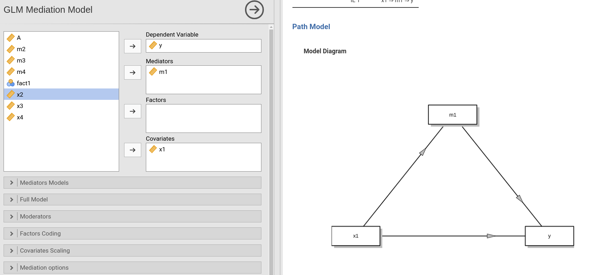
jAMM will define the models for you, as shown in the model info table.
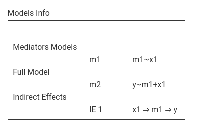
Categorical independent variables
The same logic applies for categorical independent variables.
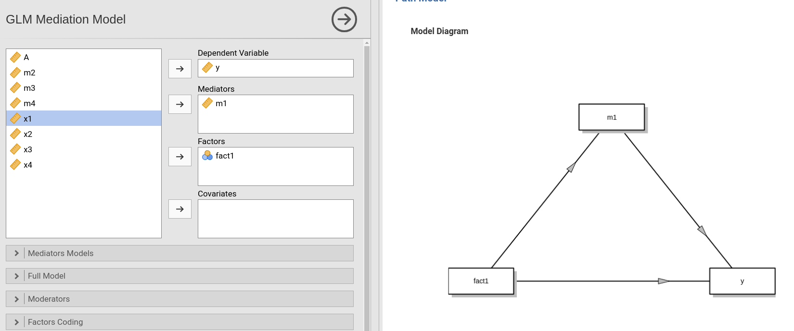
However, for categorical independent variables, the path diagram shows only one box for the IV, even though the estimation requires dummies (contrast variables) to estimate the effects. This is signaled in the notes.
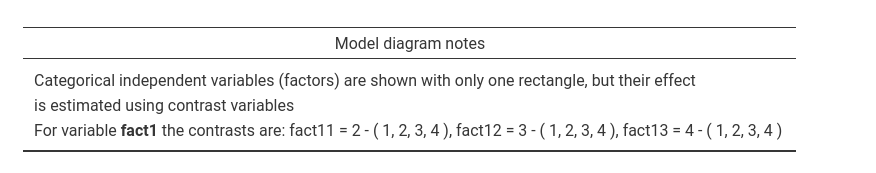
Thus, since fact1 variable has 4 groups, in the results
we will find three mediated effects, one for the contrast variable
fact11, one for fact12, and one for
fact11.
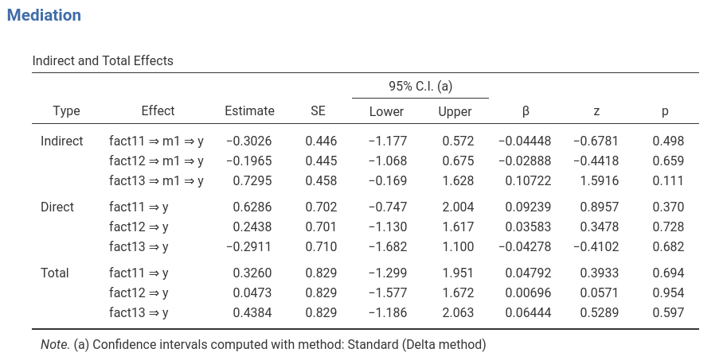
Multiple independent variables
You can add as many independent variables as you need, the model is updated, by default, accordingly with the simple rule that each IV is mediatated by the mediator.
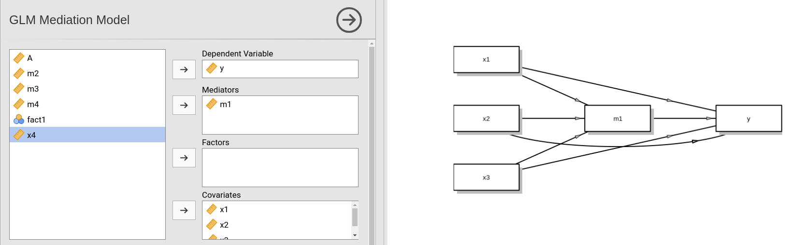
Nonetheless, one may have in mind a different model (not necessarily
sensible in all applications). Assume we want the mediated effects of
x1 and x2 through m1, but we want
the effects on y (and only them) to be computed after
partializing x3. First, we go to
Mediators models and remove the effect of x3
from the list of predictors. In doing so, the jAMM removes
x3 also from the Full model. We go there and
re-include x3 in the list of predictors. So we obtain the
model we had in mind.
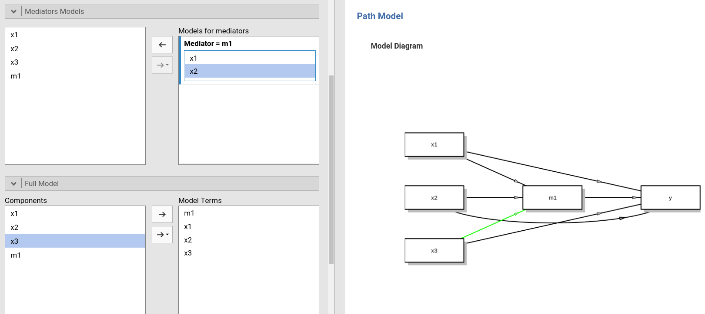
Notice the green path. That path is not estimated, but jAMM suggests
to estimate it. That is because the model we just set up is not complete
in terms of x3 mediation (recall that jAMM assumes you want
to estimate mediation models).
If seeing the suggested paths disturb you, you can suppress them in
the Mediation options tab.
Multiple mediators
Parallel mediators
By defining two or more variables as mediators in the variables input panel, we obtain a parallel mediators model by default.
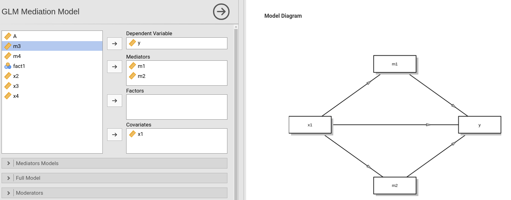
You can put as many mediators as you want
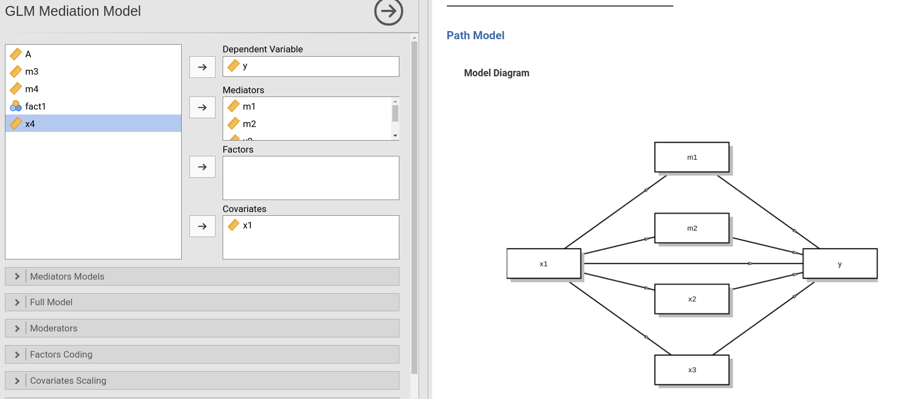
Mediators chains
Several mediation models require building some sort of mediators
chain. For instance, we can have that variable x is
measured 4 times,and we want to see if x1 affects
x2, x2 affects x3, and
x3 affects x4. To build such a model, first we
select x1 as the independent variable (it is the only
exogenous variable in the model), x2 and x3 as
mediators and x4 as dependent variable.
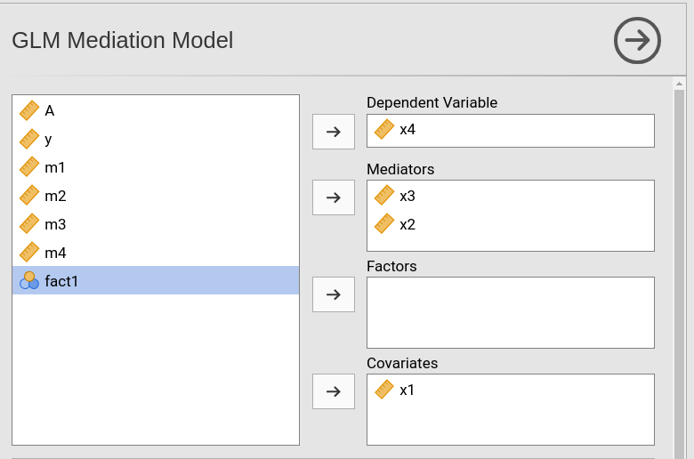
While we do so, jAMM builds a parallel mediators model (the default),
but we ignore it and move on to change that. In fact, as compared with a
parallel mediators model, the model we have in mind requires also that
x2 be a predictor of x3. We go to
Mediators models tab and add x2 in the field
Mediator=x3. There we have it.
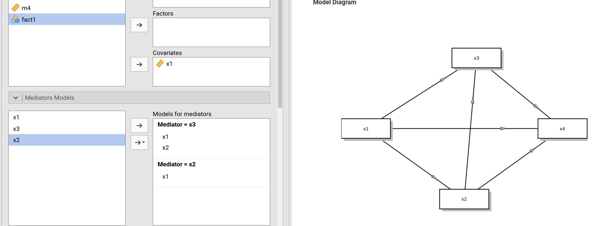
Multi-layer model
Assume you have x1 as independent, that influences
x2 and x3, that in turn affect y
through m1. We can think of this model as a multi-layer
model in terms of layers of mediators: first the x2 and
x3 layer, then m1 layer. To set it up, first
we put all endogenous predictors in the mediators field and
x1 and y in the independent and dependent
field, respectively.
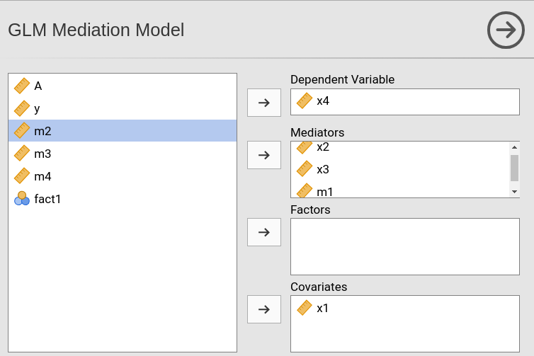
Again, we should change the automatically created parallel mediators
model. We should add the paths from x2 and x3
to m1. To do so we go to Mediators models tab
and add x2 and x3 in the field
Mediator=m1.
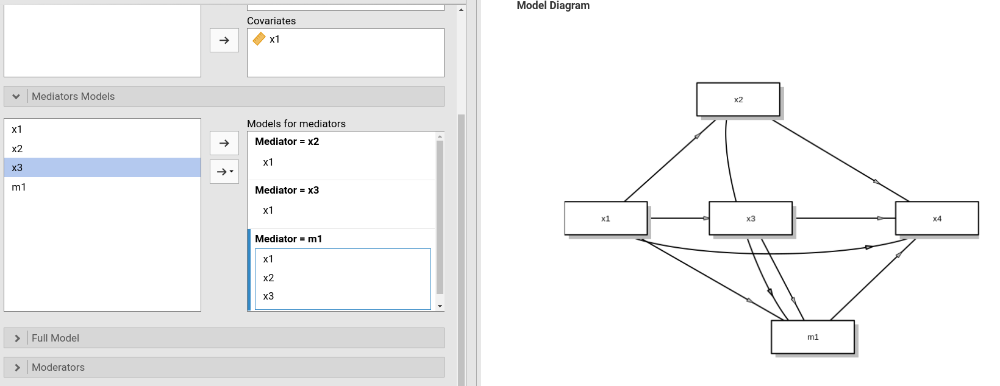
Suprised by the ugly picture? Well, the model is correct but the
picture can look better if one re-arranges the position of the terms.
First, remove the mediators (jAMM does not like re-arranging terms
already defined, so it is better to start anew). We want the last
mediator m1 to be in the center of the diagram, so we
should put it as the second mediator of the list. Then we change the
Mediators models as we did before. Here is the input: a bit
better looking.
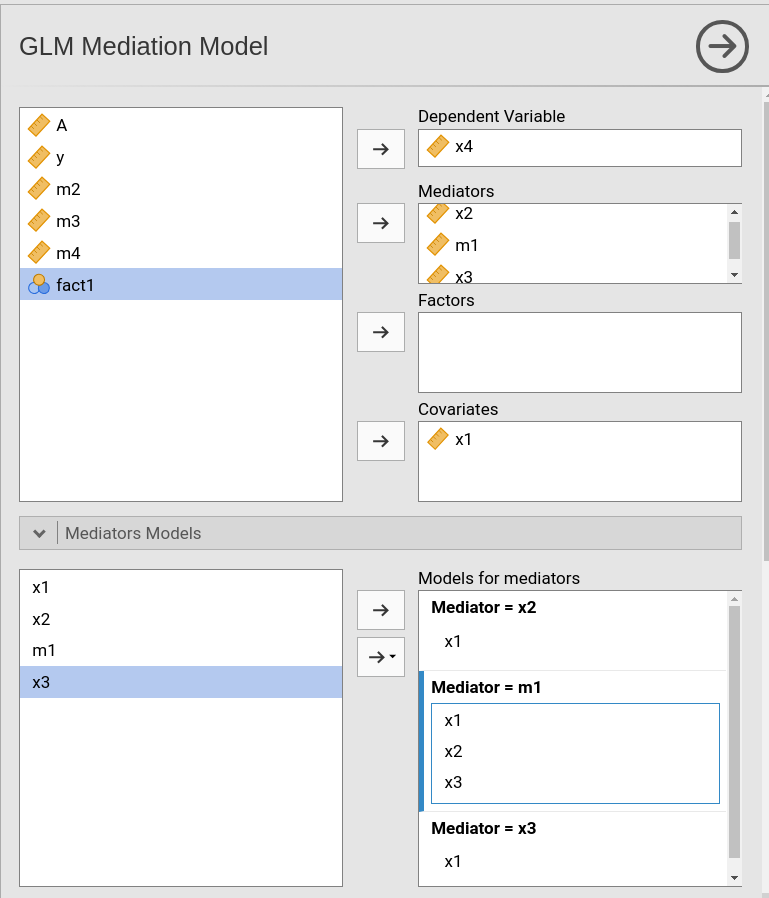
Here is the output.
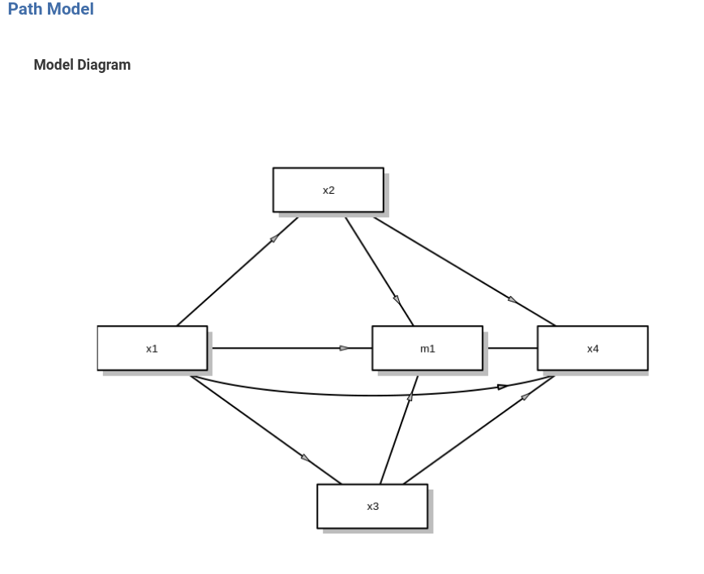
Multiple IV and multiple mediators
One can combine the multiple IVs and the multiple mediators models to better suit the research aims. By defining multiple IV and multiple mediators in the variale input tabs, one obtains, by default, a full parallel mediators model.
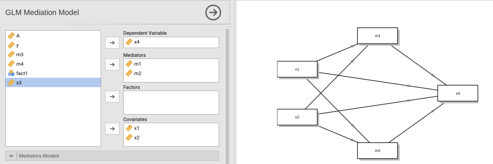
Obviously, one can then change the structure of the model, for instance by making the mediators a chain of mediators, or by removing some path from one IV to one mediator.

Notice that the previos model is not equivalent to two independent
simple mediation models, because in the present model all the effects on
the dependent variable y are computed keeping constant both
independent variables. This feature is reminded by the notes of the path
diagram.
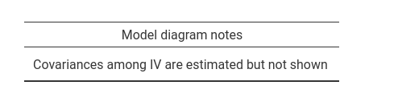
Mis-specified models
There are models that may make a lot of sense in general, but are not mediation models. These models will not be estimated by jAMM, because they cannot produce mediated effects (that are the effects jAMM requires).
The first example is a model without mediators effect.
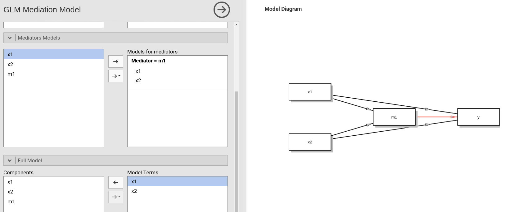
In this model I removed the path from m1 to
y in the Full model tab. That creates a model
in which the mediator has no role, and thus the path diagram shows a red
path indicating that that path is required. It also signals the problem
in the Models info table.
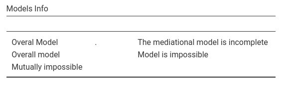
Another possible error is to have each mediator to predict all the other mediators. That would make the model recursive, and not a mediation model.
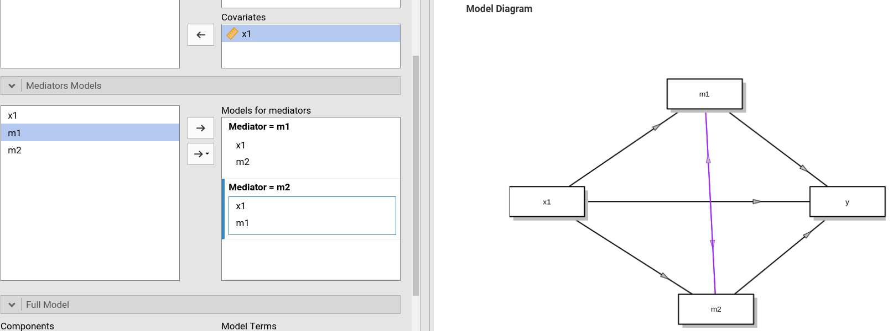
jAMM warns you of the problem with a purple path in the diagram, and
with some explanation in the Models info table.
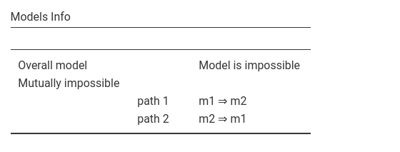
List of docs
Examples
Comments?
Got comments, issues or spotted a bug? Please open an issue on GAMLj at github“ or send me an email